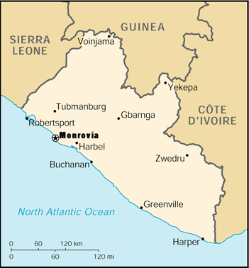

{kind=link}


| Liberia |
|
|
 | |
| Introduction |
Background: Seven years of civil strife were brought to a close in 1996 when free and open presidential and legislative elections were held. President TAYLOR now holds strong executive power with no real political opposition. The years of fighting coupled with the flight of most businesses has disrupted formal economic activity. A still unsettled domestic security situation has slowed the process of rebuilding the social and economic structure of this war-torn country.
| Geography |
Location: Western Africa, bordering the North Atlantic Ocean, between Cote d'Ivoire and Sierra Leone
Geographic coordinates: 6 30 N, 9 30 W
Map references: Africa
Area:
total:
111,370 sq km
land:
96,320 sq km
water:
15,050 sq km
Area - comparative: slightly larger than Tennessee
Land boundaries:
total:
1,585 km
border countries:
Guinea 563 km, Cote d'Ivoire 716 km, Sierra Leone 306 km
Coastline: 579 km
Maritime claims:
territorial sea:
200 nm
Climate: tropical; hot, humid; dry winters with hot days and cool to cold nights; wet, cloudy summers with frequent heavy showers
Terrain: mostly flat to rolling coastal plains rising to rolling plateau and low mountains in northeast
Elevation extremes:
lowest point:
Atlantic Ocean 0 m
highest point:
Mount Wuteve 1,380 m
Natural resources: iron ore, timber, diamonds, gold, hydropower
Land use:
arable land:
1%
permanent crops:
3%
permanent pastures:
59%
forests and woodland:
18%
other:
19% (1993 est.)
Irrigated land: 20 sq km (1993 est.)
Natural hazards: dust-laden harmattan winds blow from the Sahara (December to March)
Environment - current issues: tropical rain forest subject to deforestation; soil erosion; loss of biodiversity; pollution of coastal waters from oil residue and raw sewage
Environment - international agreements:
party to:
Desertification, Endangered Species, Marine Dumping, Nuclear Test Ban, Ozone Layer Protection, Ship Pollution, Tropical Timber 83, Tropical Timber 94
signed, but not ratified:
Biodiversity, Climate Change, Environmental Modification, Law of the Sea, Marine Dumping, Marine Life Conservation
| People |
Population: 3,164,156 (July 2000 est.)
Age structure:
0-14 years:
43% (male 681,136; female 680,501)
15-64 years:
54% (male 826,751; female 867,402)
65 years and over:
3% (male 54,334; female 54,032) (2000 est.)
Population growth rate: 1.94% (2000 est.)
Birth rate: 47.22 births/1,000 population (2000 est.)
Death rate: 16.58 deaths/1,000 population (2000 est.)
Net migration rate:
-11.22 migrant(s)/1,000 population (2000 est.)
note:
by the end of 1999, all Liberian refugees, who had fled the domestic strife, were assumed to have returned
Sex ratio:
at birth:
1.03 male(s)/female
under 15 years:
1 male(s)/female
15-64 years:
0.95 male(s)/female
65 years and over:
1.01 male(s)/female
total population:
0.98 male(s)/female (2000 est.)
Infant mortality rate: 134.63 deaths/1,000 live births (2000 est.)
Life expectancy at birth:
total population:
51.02 years
male:
49.6 years
female:
52.49 years (2000 est.)
Total fertility rate: 6.43 children born/woman (2000 est.)
Nationality:
noun:
Liberian(s)
adjective:
Liberian
Ethnic groups: indigenous African tribes 95% (including Kpelle, Bassa, Gio, Kru, Grebo, Mano, Krahn, Gola, Gbandi, Loma, Kissi, Vai, and Bella), Americo-Liberians 2.5% (descendants of immigrants from the US who had been slaves), Congo People 2.5% (descendants of immigrants from the Caribbean who had been slaves)
Religions: indigenous beliefs 40%, Christian 40%, Muslim 20%
Languages: English 20% (official), some 20 ethnic group languages, of which a few can be written and are used in correspondence
Literacy:
definition:
age 15 and over can read and write
total population:
38.3%
male:
53.9%
female:
22.4% (1995 est.)
note:
these figures are increasing because of the improving school system
| Government |
Country name:
conventional long form:
Republic of Liberia
conventional short form:
Liberia
Data code: LI
Government type: republic
Capital: Monrovia
Administrative divisions: 13 counties; Bomi, Bong, Grand Bassa, Grand Cape Mount, Grand Gedeh, Grand Kru, Lofa, Margibi, Maryland, Montserrado, Nimba, River Cess, Sinoe
Independence: 26 July 1847
National holiday: Independence Day, 26 July (1847)
Constitution: 6 January 1986
Legal system: dual system of statutory law based on Anglo-American common law for the modern sector and customary law based on unwritten tribal practices for indigenous sector
Suffrage: 18 years of age; universal
Executive branch:
chief of state:
President Charles Ghankay TAYLOR (since 2 August 1997); note - the president is both the chief of state and head of government
head of government:
President Charles Ghankay TAYLOR (since 2 August 1997); note - the president is both the chief of state and head of government
cabinet:
Cabinet appointed by the president and confirmed by the Senate
elections:
president elected by popular vote for a six-year term (renewable); election last held 19 July 1997 (next to be held NA July 2003)
election results:
Charles Ghankay TAYLOR elected president; percent of vote - Charles Ghankay TAYLOR (NPP) 75.3%, Ellen Johnson SIRLEAF (UP) 9.6%, Alhaji KROMAH (ALCOP) 4%, other 11.1%
Legislative branch:
bicameral National Assembly consists of the Senate (26 seats; members elected by popular vote to serve nine-year terms) and the House of Representatives (64 seats; members elected by popular vote to serve six-year terms)
elections:
Senate - last held 19 July 1997 (next to be held in NA 2006); House of Representatives - last held 19 July 1997 (next to be held in NA 2003)
election results:
Senate - percent of vote by party - NA; seats by party - NPP 21, UP 3, ALCOP 2; House of Representatives - percent of vote by party - NA; seats by party - NPP 49, UP 7, ALCOP 3, Alliance of Political Parties 2, UPP 2, LPP 1; note - the Alliance of Political Parties was a coalition of the LAP and the Liberia Unification Party or LUP
Judicial branch: Supreme Court
Political parties and leaders: All Liberia Coalition Party or ALCOP [Lusinee KAMARA]; Liberian Action Party or LAP [Cletus WOTORSON]; Liberian National Union or LINU [Henry MONIBA, chairman]; Liberian People's Party or LPP [Togba-Nah TIPOTEH, chairman]; National Democratic Party of Liberia or NDPL [Isaac DAKINAH]; National Patriotic Party or NPP [Charles Ghankay TAYLOR] - governing party; People's Progressive Party or PPP [Chea CHEAPOO, chairman]; Reformation Alliance Party or RAP [Henry Boimah FAHNBULLEH, chairman]; True Whig Party or TWP [Rudolph SHERMAN, chairman]; United People's Party or UPP [Gabriel Baccus MATTHEWS, chairman]; Unity Party or UP [Charles Clarke]
International organization participation: ACP, AfDB, CCC, ECA, ECOWAS, FAO, G-77, IAEA, IBRD, ICAO, ICFTU, ICRM, IDA, IFAD, IFC, IFRCS, ILO, IMF, IMO, Inmarsat, Intelsat (nonsignatory user), Interpol, IOC, IOM, ITU, NAM, OAU, OPCW, UN, UNCTAD, UNESCO, UNIDO, UPU, WCL, WFTU, WHO, WIPO, WMO
Diplomatic representation in the US:
chief of mission:
Ambassador-designate William BULL
chancery:
5303 Colorado Avenue NW, Washington, DC 20011
telephone:
[1] (202) 723-0437
FAX:
[1] (202) 723-0436
consulate(s) general:
New York
Diplomatic representation from the US:
chief of mission:
Ambassador Bismarck MYRICK
embassy:
111 United Nations Drive, Mamba Point, Monrovia
mailing address:
use embassy street address
telephone:
[231] 226-370 through 226-382
FAX:
[231] 226-148, 226-147
Flag description: 11 equal horizontal stripes of red (top and bottom) alternating with white; there is a white five-pointed star on a blue square in the upper hoist-side corner; the design was based on the US flag
| Economy |
Economy - overview: A civil war in 1989-96 destroyed much of Liberia's economy, especially the infrastructure in and around Monrovia. Many businessmen fled the country, taking capital and expertise with them. Some returned during 1997. Many will not return. Richly endowed with water, mineral resources, forests, and a climate favorable to agriculture, Liberia had been a producer and exporter of basic products, while local manufacturing, mainly foreign owned, had been small in scope. The democratically elected government, installed in August 1997, inherited massive international debts and currently relies on revenues from its maritime registry to provide the bulk of its foreign exchange earnings. The restoration of the infrastructure and the raising of incomes in this ravaged economy depend on the implementation of sound macro- and micro-economic policies of the new government, including the encouragement of foreign investment.
GDP: purchasing power parity - $2.85 billion (1999 est.)
GDP - real growth rate: 0.5% (1999 est.)
GDP - per capita: purchasing power parity - $1,000 (1999 est.)
GDP - composition by sector:
agriculture:
50%
industry:
15%
services:
35% (1999 est.)
Population below poverty line: 80%
Household income or consumption by percentage share:
lowest 10%:
NA%
highest 10%:
NA%
Inflation rate (consumer prices): 3% (1998 est.)
Labor force - by occupation: agriculture 70%, industry 8%, services 22% (1999 est.)
Unemployment rate: 70%
Budget:
revenues:
$NA
expenditures:
$NA, including capital expenditures of $NA
Industries: rubber processing, palm oil processing, diamonds
Industrial production growth rate: 0%
Electricity - production: 490 million kWh (1998)
Electricity - production by source:
fossil fuel:
62.24%
hydro:
37.76%
nuclear:
0%
other:
0% (1998)
Electricity - consumption: 456 million kWh (1998)
Electricity - exports: 0 kWh (1998)
Electricity - imports: 0 kWh (1998)
Agriculture - products: rubber, coffee, cocoa, rice, cassava (tapioca), palm oil, sugarcane, bananas; sheep, goats; timber
Exports: $39 million (f.o.b., 1998 est.)
Exports - commodities: diamonds, iron ore, rubber, timber, coffee, cocoa
Exports - partners: Benelux 36%, Norway 18%, Ukraine 15%, Singapore 9% (1997)
Imports: $142 million (f.o.b., 1998 est.)
Imports - commodities: fuels, chemicals, machinery, transportation equipment, manufactured goods; rice and other foodstuffs
Imports - partners: South Korea 38%, Japan 14%, Italy 11%, Singapore 9% (1997)
Debt - external: $3 billion (1999 est.)
Economic aid - recipient: $200 million pledged (1998)
Currency: 1 Liberian dollar (L$) = 100 cents
Exchange rates: Liberian dollars (L$) per US$1 - 1.0000 (officially fixed rate since 1940); market exchange rate: Liberian dollars (L$) per US$1 - 40 (December 1998), 50 (October 1995); market rate floats against the US dollar
Fiscal year: calendar year
| Communications |
Telephones - main lines in use: 5,000 (1995)
Telephones - mobile cellular: 0 (1995)
Telephone system:
telephone and telegraph service via microwave radio relay network; main center is Monrovia
domestic:
NA
international:
satellite earth station - 1 Intelsat (Atlantic Ocean)
Radio broadcast stations: AM 0, FM 6, shortwave 4 (1999)
Radios: 790,000 (1997)
Television broadcast stations: 2 (plus four low-power repeaters) (2000)
Televisions: 70,000 (1997)
Internet Service Providers (ISPs): NA
| Transportation |
Railways:
total:
490 km (328 km single track); note - three rail systems owned and operated by foreign steel and financial interests in conjunction with the Liberian Government; one of these, the Lamco Railroad, closed in 1989 after iron ore production ceased; the other two were shut down by the civil war; large sections of the rail lines have been dismantled; approximately 60 km of railroad track was exported for scrap
standard gauge:
345 km 1.435-m gauge
narrow gauge:
145 km 1.067-m gauge
Highways:
total:
10,600 km (there is major deterioration on all highways due to heavy rains and lack of maintenance)
paved:
657 km
unpaved:
9,943 km (1996 est.)
Ports and harbors: Buchanan, Greenville, Harper, Monrovia
Merchant marine:
total:
1,593 ships (1,000 GRT or over) totaling 54,513,479 GRT/85,495,576 DWT
ships by type:
barge carrier 3, bulk 360, cargo 109, chemical tanker 185, combination bulk 22, combination ore/oil 50, container 225, liquified gas 91, multi-functional large load carrier 1, passenger 40, petroleum tanker 351, refrigerated cargo 76, roll-on/roll-off 16, short-sea passenger 3, specialized tanker 15, vehicle carrier 46 (1999 est.)
note:
a flag of convenience registry; includes ships from 54 countries among which are Germany 186, US 161, Norway 142, Greece 144, Japan 124, Hong Kong 100, China 53, UK 32, Singapore 39, and Monaco 38 (1998 est.)
Airports: 45 (1999 est.)
Airports - with paved runways:
total:
2
over 3,047 m:
1
1,524 to 2,437 m:
1 (1999 est.)
Airports - with unpaved runways:
total:
43
1,524 to 2,437 m:
3
914 to 1,523 m:
5
under 914 m:
35 (1999 est.)
| Military |
Military branches: Army, Air Force, Navy
Military manpower - availability:
males age 15-49:
703,107 (2000 est.)
Military manpower - fit for military service:
males age 15-49:
378,426 (2000 est.)
Military expenditures - dollar figure: $1 million (FY98)
Military expenditures - percent of GDP: 2% (FY98)
| Transnational Issues |
Disputes - international: none
Illicit drugs: increasingly a transshipment point for Southeast and Southwest Asian heroin and South American cocaine for the European and US markets